| 铰链四杆机构 | |||
机构名称及几何条件 |
机构特性 |
机构传动函数及应用 |
|
曲柄摇杆机构 |
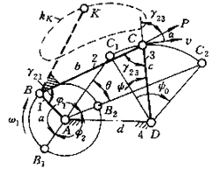 (1)各杆杆长分别为a、b、c和d，设连架杆1的长度a为最短； (2)最短杆杆长a与最长杆长度之和≤其余两杆长之和； (3) 曲柄为最短杆―连架杆1。另一连架杆3为摇杆，摆角0<ψ<180°，摆动的范围要么在机架及其延长线之上，要么在其之下。 |
(1)曲柄1作匀速转动时，摇杆3作往复变速摆动； (2)主动曲柄与连杆重叠或拉直共线时，从动摇杆3处于极限位置C 1 D或C 2 D，摇杆摆角 ψ o =arccos{[c 2 +d 2 -(a+b) 2 ]/2cd} -arccos{[c 2 +d 2 -(b-a) 2 ]/2cd} (3)与摇杆极限位置对应的曲柄位置为AB 1 和AB 2 ,其间夹角为φ 1 和φ 2 ,分别对应摇杆3左右摆动的两个行程，其中小角的行程一般为急回行程,两极位间夹角θ表示为(0≤θ<180°): (4)摇杆急回行程与工作行程平均速度之比K称为行程速比系数： (5)摇杆与连杆所夹锐角是传动角γ，γ越大表明机构的传力性能越好。γ min 发生在曲柄与机架共线的两个可能位置上。一般要求γ min ≥30°～45° (6)以摇杆为原动件时，在曲柄与连杆共线的两个位置存在“死点”。在死点附近有一个自锁区，摇杆不能驱动曲柄转动。这时，可利用惯性或其它措施使机构通过死点位置。 |
1)机构传动函数为 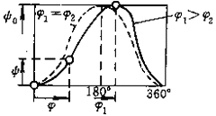 当φ 1 =φ 2 时为对心曲柄摇杆机构 , θ=0,κ=1。 (2)机构的应用
|
双曲柄机构 |
一般双曲柄机构 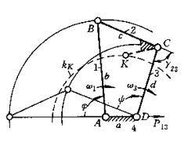 (1) 各杆长分别 a、b 、 c和d 表示，机架长度a为最短； (2)最短杆杆长a与最长杆长度之和≤其余两杆长之和； (3)两连架杆 1和3 均可作整周转动而成曲柄。 |
(1) 当主动曲柄 1 (或3)是匀速转动时,从动曲柄 3 (或1)作变速转动 , 即传动比 (2)平均传动比i 均 = n 1 /n 3 =1 (3) 当连杆 2 与机架 4 平行时 , i 13 =1, 而当连杆 2 垂直于机架 4 时 , 对某些尺寸组合的机构 , 其i 13 接近极值 : (4)当机架长 a 改变时，传动不需中断； (5)任一曲柄为主动件时，从动曲柄无极限位置，且机构无死点； (6)当某一曲柄主动时，连杆2和从动曲柄间所夹锐角为传动角γ。最小传动角γ min 发生在主动曲柄与机架共线的两个可能位置上。一般要求γ min ≥30°～45°。曲柄1主动时的γ min 取下式最小值： 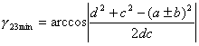 |
(1)机构传动函数为 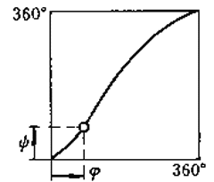 (2)机构应用
|
平行四边形机构 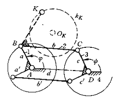 (1)机构中的相对杆平行且杆长相等,a=c和b=d,构成平行四边形形状； (2) 两连架杆1和 3 均为曲柄，且转速相等。 |
(1) 主动曲柄和从动曲柄的运动完全相同，转速总是相等的； (2)连杆2作圆周平行移动，即ω 2 =0； (3) 连杆2上任一点的连杆曲线为圆，图示点K的轨迹为圆κκ , 半径等于曲柄长a,圆心为点 O k , 可按△BKC≌△ AO k D 来确定点 O k 的位置； (4)当连杆与机架共线时机构有两个死点位置，传动角γ=0。同时死点又是运动方向不确定位置。可利用双联平行四边形解决死点问题。 |
(1)机构传动函数为： 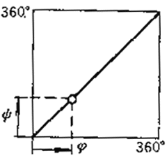 (2)机构应用
|
|
反平行四边形机构 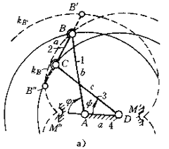 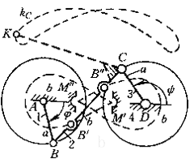 (1) 机构中相对杆的杆长相等，a=c和 b=d， 但不相互平行; (2)两连架杆均为曲柄； (3)依据固定最短杆(图 a) 或最长杆（图b）的不同情况，可分为两连架杆同向（图a）或反向转动（图 b ）两种情况。可由平行四边形机构转化而来。 |
(1) 主动曲柄 1 或是等速转动时，从动曲柄3或 1 同向（图a）或反向（图 b ）变速转动； (2)机构传动比为 (3) 当φ=0°和φ =180 °时,从动曲柄角速度有极值； (4)由于机构尺寸原因,当从支曲柄与机架共线时 , 传动角γ 23min =0,机构处于死点位置。为保持反平行四边形特性,必须在 B ′、 B ″及相应的M′、 M ″处设置渡过死点的结构 |
(1)机构传动函数为 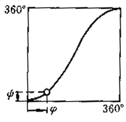 a ）同向转动反平行四边形机构 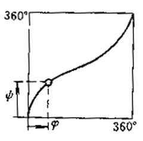 b ）反向转动反平行四边形机构 (2)机构应用
|
|
双摇杆机构 |
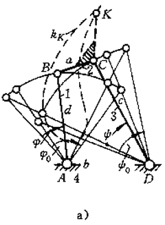 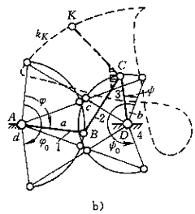 (1) 最短杆杆长与最长杆杆长之和小于其余两杆杆长之和，且最短杆的对边杆为机架（图a）；最短杆杆长与最和杆杆长之和大于其余两杆杆长之和（图b） (2)图a)示双摇杆机构中的连杆 2 可相对其余构件作整周转动：图b)示机构中的连杆 2则 不能整周转动 |
(1)主动摇杆1或3作往复摆动时，从动摇杆3或1也作往复摆动，图a中2为主动时，1和3的极限摆角为φ O 和ψ O (2)杆1和杆 3 的极限 ( 最大)摆角分别为φ O 和ψ O 其值 ( 图 a 和图b)分别为 φ O =arccos([b 2 +d 2 -(a+c) 2 ]/[2bd])-arccos([b 2 +d 2 -(c-a) 2 ]/[2bd]) ψ O =arccos([b 2 +c 2 -(a+d) 2 ]/[2bc]) -arccos([b 2 +c 2 -(d-a) 2 ]/[2bc]) 和 φ O =2arccos([a 2 +d 2 -(b+c) 2 ]/[2bd]) ψ O =2arccos([b 2 +d 2 -(a+c) 2 ]/[2bd]) (3) 任一摇杆为主动且连杆与从动摇杆共线(两次 ) 时 , 机构处于死点,且最小传动角为零 , 所以实际使用时,转角范围应小于此两位置所限的范围 |
(1)机构传动函数为 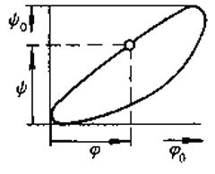 c)图a示双摇杆机构 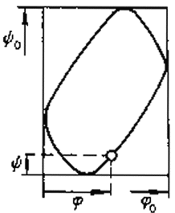 d) 图b示双摇杆机构 除图a以杆主动外 , 一般只能实现函数或轨迹中的一段 (2)机构应用
|